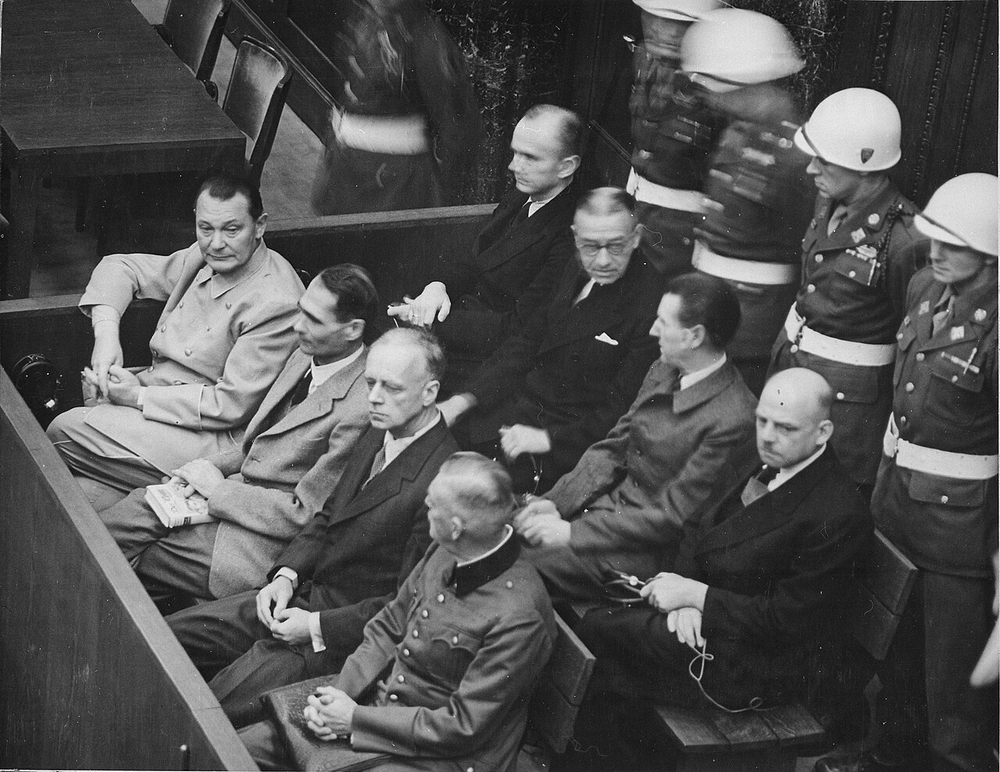
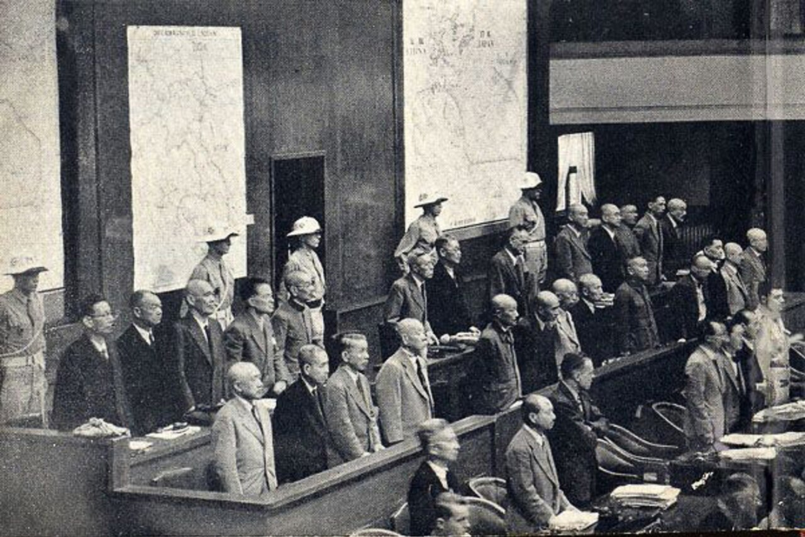
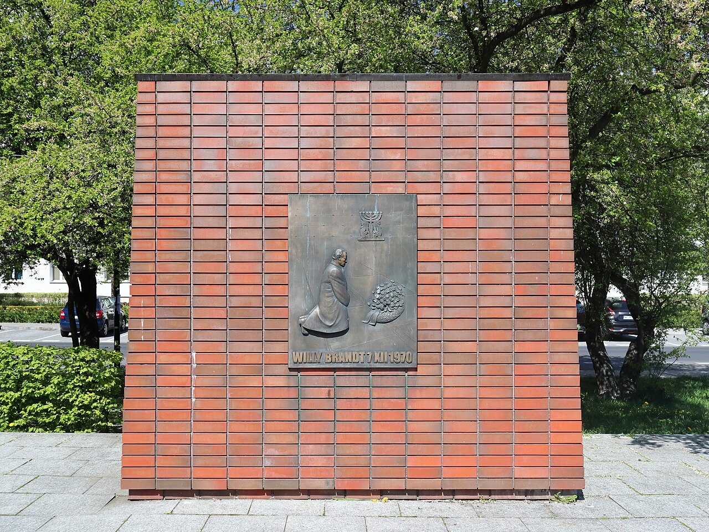
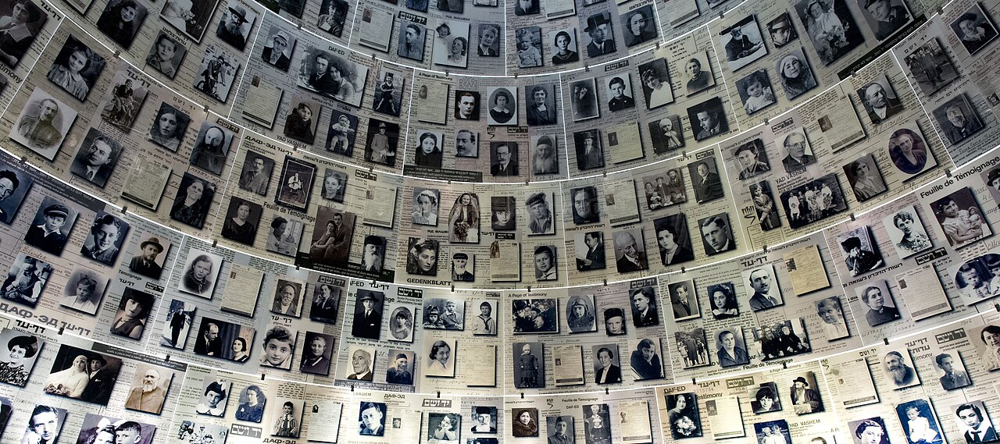
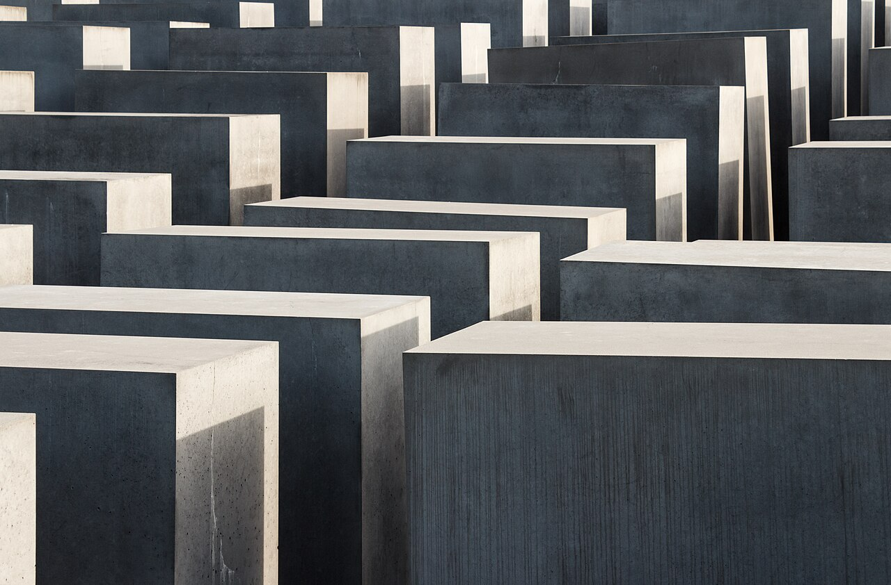

인권 회복과 평화 실현을
위해 노력하다
전쟁이 끝난 뒤 세계는 무엇을 했을까요? 전쟁 범죄자를 재판하고, 새로운 국제기구를 만들고, 잘못을 반성하며 기억하는 일을 시작했습니다. 오늘은 그 노력을 따라가 봅니다.
- 1국제 사회가 인권 회복을 위해 펼친 활동을 이해할 수 있다.
- 2평화를 실현하기 위한 여러 가지 노력을 설명할 수 있다.
살아남은 사람들이 들려주는 그날의 진실
지난 시간에 배운 전쟁 범죄는 살아남은 사람들의 기록과 증언 덕분에 세상에 알려졌습니다.
미니 보트린의 일기
난징에서 피란민을 보호하던 미국인 선교사. 불타는 도시와 계속되는 약탈을 일기에 적으며 “전쟁의 결과는 죽음과 황폐”라고 기록했다.김학순의 공개 증언
일본군 ‘위안부’ 피해 사실을 처음으로 실명으로 공개 증언했다. 끌려갈 때 일본군이 “내 말에 반항하면 너는 여기서 죽는 거야.”라고 위협했다고 말했다.엘리 위젤의 『나이트』
열다섯 살에 아우슈비츠로 끌려간 홀로코스트 생존자. 일할 사람과 가스실로 보낼 사람을 가르던 ‘선별’의 공포를 소설로 남겼다.생각을 나눈 뒤 열어 보기
전후 처리와 국제 연합의 창설
전쟁이 진행되는 동안 연합국 대표들은 여러 차례 모여 전쟁 뒤의 세계를 의논했습니다. 카드를 눌러 각 회담에서 무엇을 정했는지 확인해 봅시다.
국제 연맹과 무엇이 달라졌을까?
| 구분 | 국제 연맹 (1920) | 국제 연합 (1945) |
|---|---|---|
| 강대국 참여 | 미국 등 강대국이 참여하지 않음 | 미국과 소련 등 강대국이 참여 |
| 분쟁 해결 수단 | 분쟁을 막을 군사적 수단이 없음 | 군사적 수단을 동원할 수 있음 (국제 연합 평화 유지군) |
| 결과 | 침략 전쟁을 막지 못함 | 오늘날에도 평화와 번영을 지키는 역할 |
다음은 어느 기구에 대한 설명일까요?
안전 보장 이사회 아래에 평화 유지군을 두었다.
제1차 세계 대전 뒤에 세워졌지만 미국이 참여하지 않았다.
대서양 헌장의 정신에 따라 1945년에 세워졌다.
군사적 제재 수단이 없어 국제 문제 해결에 큰 영향력을 미치지 못했다.
인권 회복을 위한 노력: 전쟁 범죄자 재판
전쟁이 끝난 뒤 연합국 대표들은 런던에 모여 침략 전쟁과 대량 학살 같은 비인간적인 행위를 범죄로 정했습니다. 그리고 독일 뉘른베르크와 일본 도쿄에서 전쟁 범죄자를 처벌하는 국제 군사 재판을 열었습니다.
전쟁 범죄 · 국제법상 전투와 관련된 법규를 어기는 행위
뉘른베르크 재판 1945. 11.~약 1년 · 독일 뉘른베르크

이 밖에도 유럽의 여러 나라에서는 나치스에 협력한 사람들을 처벌했습니다.
극동 국제 군사 재판(도쿄 재판) 1946~1948 · 일본 도쿄

뉘른베르크 재판은 어떤 의의가 있을까? (생각한 뒤 열어 보기)
아이히만의 주장에 반박해 보자
아이히만은 제2차 세계 대전 때 유대인을 아우슈비츠 수용소로 보내는 일을 맡았습니다. 독일이 항복한 뒤 숨어 지내다 붙잡혀 1961년에 재판을 받았고, 전쟁이 끝난 지 17년 만인 1962년에 교수형을 선고받았습니다. 그는 법정에서 이렇게 주장했습니다.
유대인 학살은 국가의 명령에 따른 결과입니다. 단 한 사람도 내 손으로 죽이지 않았고, 죽이라고 명령하지도 않았습니다.
예시 답안과 다른 재판 사례 보기
예시 · 아이히만은 수용소로 보낸 유대인들이 어떻게 되는지 알면서도 그 일을 했다. 직접 죽이지 않았더라도 학살을 가능하게 한 것이므로 홀로코스트에 참여한 것과 다름없다. 명령이라는 이유로 사람의 생명을 빼앗는 일을 따른 책임은 사라지지 않는다.
다른 사례 · 아우슈비츠 수용소의 회계 담당 경비병이었던 오스카 그뢰닝은 2015년, 94세의 나이로 재판을 받아 징역 4년을 선고받았다. 시간이 오래 지나도 전쟁 범죄의 책임은 끝나지 않는다는 것을 보여 준다.
평화 실현을 위한 노력
① 국제 조약을 맺다
제1차 세계 대전이 끝난 뒤부터 여러 나라는 국제 협의를 거쳐 평화를 위한 조약을 맺었습니다.
- 1922제노바 회의 · 유럽 각국 대표가 이탈리아 제노바에 모여 전쟁 배상금과 외교 관계 문제를 논의
- 1925로카르노 조약 · 유럽의 국경선 문제를 처리
- 1928켈로그·브리앙 조약 · 국제 분쟁을 해결하려고 전쟁을 일으키는 행위를 불법으로 정함
② 잘못을 반성하다

③ 기억하다
여러 나라는 전쟁의 기록이 담긴 박물관을 세우고, 기념관·추모관을 만들어 희생자를 추모하며 끔찍한 역사가 되풀이되지 않도록 노력하고 있습니다.


생각을 나눈 뒤 열어 보기
배운 내용을 확인해요
1. 1941년 미국과 영국의 대표가 만나 전후 평화 원칙이 담긴 을/를 발표하였다.
2. 1945년 여러 나라 대표가 모여 국제 평화와 안전을 지키기 위해 을/를 세웠다.
3. 제2차 세계 대전 이후 을/를 열어 독일의 주요 전쟁 범죄자를 재판하였다.
4. 이 재판에서 (이)라는 개념을 처음으로 법 집행에 적용하였다.
5. 도쿄에서 열린 에서는 일본 총리를 포함하여 전쟁을 이끌었던 7명이 사형을 선고받았다.
6. 1970년 서독의 총리는 유대인 희생자 위령탑 앞에서 무릎을 꿇고 사죄하였다.
각 설명이 옳으면 O, 틀리면 X를 고르세요. 옳은 설명의 무늬가 오른쪽 판에 색칠됩니다. 어떤 숫자가 나타날까요?
제2차 세계 대전에 참가한 국가는 모두 민간인을 공격하지 않았다.
일본은 한국, 중국 등의 점령지에서 수만 명의 여성을 끌고 가 일본군 ‘위안부’의 삶을 강요하였다.
미국과 소련은 모두 국제 연합에 참여하였다.
제2차 세계 대전이 끝난 후 일본 천황은 전쟁 범죄의 책임을 물어 재판을 받았다.
전쟁의 상처를 돌아보는 다큐멘터리 기획하기
모둠별로 주제를 하나 고르고, 추모 공간을 찾아 세 장면짜리 다큐멘터리를 기획해 봅시다. (교과서 205쪽)
아이히만 반박 글(STEP 3), 빈칸·숨은 숫자·연맹/연합 분류 결과, 다큐멘터리 기획안이 한 번에 제출됩니다. 고쳐서 다시 제출해도 괜찮아요(마지막 제출을 기준으로 봅니다).
다음 시간에는 Ⅵ-03. 아시아와 아프리카의 민족 운동을 배웁니다.